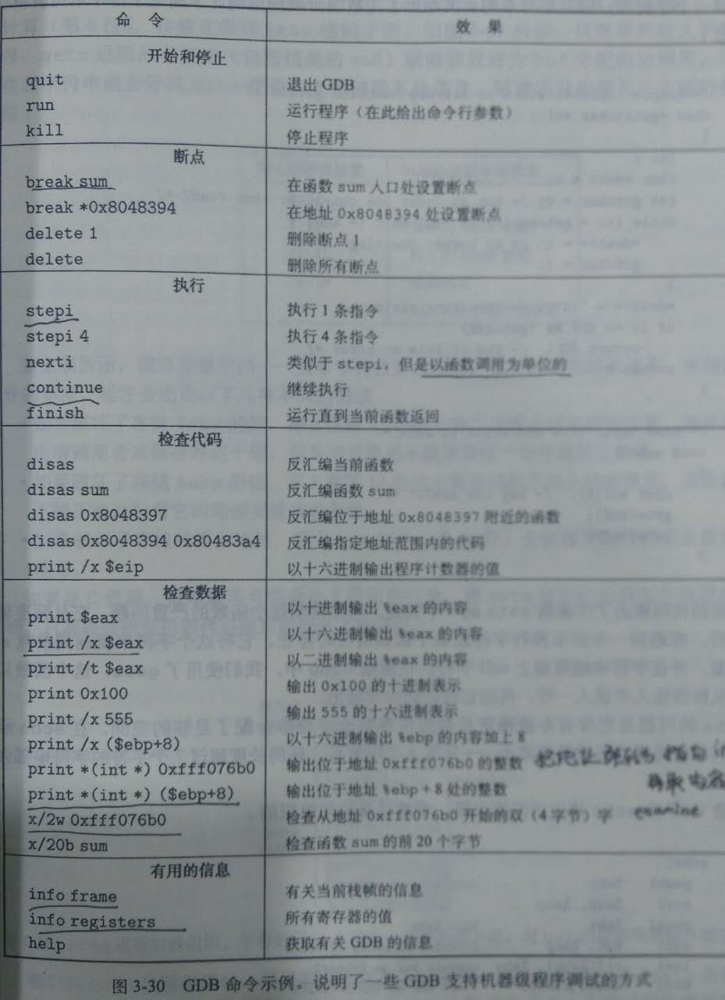
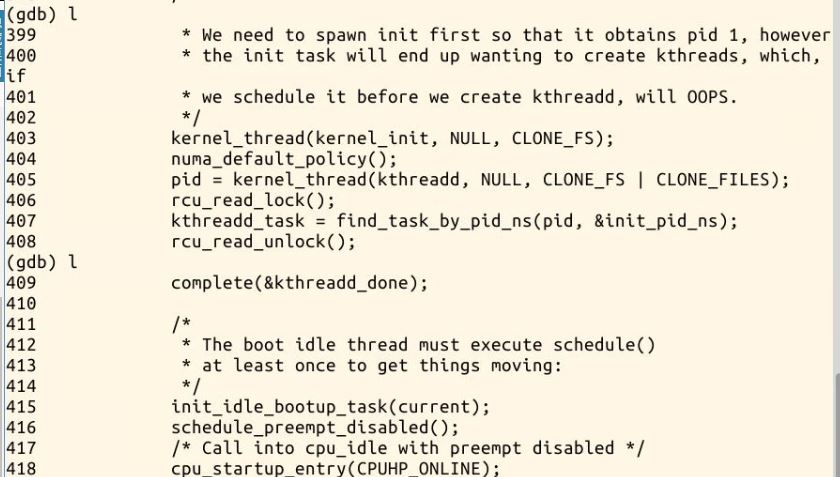

薛兆江 + 原创作品转载请注明出处 + 《Linux内核分析》MOOC课程http://mooc.study.163.com/course/USTC-1000029000
使用gdb跟踪调试内核从start_kernel到init进程启动，详细分析从start_kernel到init进程启动的过程
linux内核源文件可以看Linux kernel stable tree
Linux内核启动初始化的起点就位于init/main.c中的函数start_kernel
在深入理解计算机系统175页，有详细的gdb常用命令
第510行，全局变量init_task，即手工创建的PCB，0号进程初始化，0号进程就是最终的idle。
第403行，第一个用户态进程创建。
asmlinkage __visible void __init start_kernel(void)
{
char *command_line;//命令行，用来存放bootloader传递过来的参数
char *after_dashes;
/*
* Need to run as early as possible, to initialize the
* lockdep hash:
*/
lockdep_init();//初始化内核依赖关系表，初始化hash表,内核调试模块，用来检查内核互斥机制（尤其是自旋锁）潜在的死锁问题。
set_task_stack_end_magic(&init_task);//初始化系统第一个task_struct结构体,手工创建的PCB，0号进程即最终的idle进程。
smp_setup_processor_id();// 设置对称多处理模型的处理器id
debug_objects_early_init();//初始化debug kernel相关
/*
* Set up the the initial canary ASAP:
*/
boot_init_stack_canary();//为栈增加保护机制，预防一些缓冲区溢出之类的攻击
cgroup_init_early();//Cgroup初始化，Cgroup是近代linux kernel出现的.它为进程和其后续的子进程提供了一种性能控制机制
local_irq_disable();//关闭当前CPU的中断
early_boot_irqs_disabled = true;
/*
* Interrupts are still disabled. Do necessary setups, then
* enable them
*/
boot_cpu_init();//激活当前CPU
page_address_init();//初始化高端内存的映射表
pr_notice("%s", linux_banner);
setup_arch(&command_line);//对不同体系结构的CPU设置不同的参数、选项等
mm_init_cpumask(&init_mm);
setup_command_line(command_line);//保存未改变的comand_line到字符数组static_command_line［］中。保存 boot_command_line到字符数组saved_command_line［］中
setup_nr_cpu_ids();
setup_per_cpu_areas();//每个CPU分配pre-cpu结构内存并复制.data.percpu段的数据
smp_prepare_boot_cpu(); /* arch-specific boot-cpu hooks */
build_all_zonelists(NULL, NULL);
page_alloc_init();//设置内存页分配通知器
pr_notice("Kernel command line: %s\n", boot_command_line);
parse_early_param();//解析cmdline中的启动参数
after_dashes = parse_args("Booting kernel",
static_command_line, __start___param,
__stop___param - __start___param,
-1, -1, &unknown_bootoption);//这行代码主要对传入内核参数进行解释，如果不能识别的命令就调用最后参数的函数
if (!IS_ERR_OR_NULL(after_dashes))
parse_args("Setting init args", after_dashes, NULL, 0, -1, -1,
set_init_arg);
jump_label_init();
/*
* These use large bootmem allocations and must precede
* kmem_cache_init()
*/
setup_log_buf(0);
pidhash_init();
vfs_caches_init_early(); //前期虚拟文件系统(vfs)的缓存初始化
sort_main_extable();//对内核异常表(exception table)按照异常向量号大小进行排序，以便加速访问
trap_init();//初始化硬件中断，函数中设置了很多中断门
mm_init();//建立内核的内存分配器
/*
* Set up the scheduler prior starting any interrupts (such as the
* timer interrupt). Full topology setup happens at smp_init()
* time - but meanwhile we still have a functioning scheduler.
*/
sched_init();//初始化任务调度
/*
* Disable preemption - early bootup scheduling is extremely
* fragile until we cpu_idle() for the first time.
*/
preempt_disable();//关闭优先级调度
if (WARN(!irqs_disabled(),
"Interrupts were enabled *very* early, fixing it\n"))
local_irq_disable();
idr_init_cache();
rcu_init();//初始化直接读拷贝更新的锁机制
context_tracking_init();
radix_tree_init();
/* init some links before init_ISA_irqs() */
early_irq_init();
init_IRQ();//中断向量的初始化
tick_init();//初始化tick控制功能，注册clockevents的框架
rcu_init_nohz();
init_timers();//初始化引导CPU的时钟相关的数据结构
hrtimers_init();
softirq_init();//初始化软件中断，软件中断与硬件中断区别就是中断发生时，软件中断是使用线程来监视中断信号，而硬件中断是使用CPU硬件来监视中断。
timekeeping_init();
time_init();//初始化系统时钟。开启一个硬件定时器，开始产生系统时钟就是system_timer的初始化
sched_clock_postinit();
perf_event_init();
profile_init();
call_function_init();
WARN(!irqs_disabled(), "Interrupts were enabled early\n");
early_boot_irqs_disabled = false;
local_irq_enable();
kmem_cache_init_late();//核心Cache初始化
/*
* HACK ALERT! This is early. We're enabling the console before
* we've done PCI setups etc, and console_init() must be aware of
* this. But we do want output early, in case something goes wrong.
*/
console_init();//控制台初始化
if (panic_later)
panic("Too many boot %s vars at `%s'", panic_later,
panic_param);
lockdep_info();
/*
* Need to run this when irqs are enabled, because it wants
* to self-test [hard/soft]-irqs on/off lock inversion bugs
* too:
*/
locking_selftest();
#ifdef CONFIG_BLK_DEV_INITRD
if (initrd_start && !initrd_below_start_ok &&
page_to_pfn(virt_to_page((void *)initrd_start)) < min_low_pfn) {
pr_crit("initrd overwritten (0x%08lx < 0x%08lx) - disabling it.\n",
page_to_pfn(virt_to_page((void *)initrd_start)),
min_low_pfn);
initrd_start = 0;
}
#endif
page_cgroup_init();
debug_objects_mem_init();
kmemleak_init();
setup_per_cpu_pageset();
numa_policy_init();
if (late_time_init)
late_time_init();
sched_clock_init();
calibrate_delay();//延迟校准
pidmap_init();//进程号位图初始化，一般用一个page来指示所有的进程PID占用情况
anon_vma_init();//初始化反向映射的匿名内存，提供反向查找内存的结构指针位置，快速地回收内存。
acpi_early_init();
#ifdef CONFIG_X86
if (efi_enabled(EFI_RUNTIME_SERVICES))
efi_enter_virtual_mode();
#endif
#ifdef CONFIG_X86_ESPFIX64
/* Should be run before the first non-init thread is created */
init_espfix_bsp();
#endif
thread_info_cache_init();
cred_init();
fork_init(totalram_pages);//初始化kernel的fork()环境。
proc_caches_init();//进程缓存初始化，为进程初始化创建机制所需的其他数据结构申请空间
buffer_init(); //初始化文件系统的缓冲区，并计算最大可以使用的文件缓存。
key_init();//没有键盘则为空，如果有键盘，则为键盘分配一个高速缓存
security_init();
dbg_late_init();
vfs_caches_init(totalram_pages);//初始化虚拟文件系统
signals_init();//初始化内核信号队列
/* rootfs populating might need page-writeback */
page_writeback_init();//页面写机制初始化
proc_root_init();//初始化系统进程文件系统，主要提供内核与用户进行交互的平台，方便用户实时查看进程的信息。
cgroup_init();
cpuset_init();//初始化CPUSET，CPUSET主要为控制组提供CPU和内存节点的管理的结构。
taskstats_init_early();
delayacct_init();
check_bugs();//检查体系结构漏洞
acpi_subsystem_init();
sfi_init_late();
if (efi_enabled(EFI_RUNTIME_SERVICES)) {
efi_late_init();
efi_free_boot_services();
}
ftrace_init();
/* Do the rest non-__init'ed, we're now alive */
rest_init();//剩下的初始化工作,包括所有剩下的硬件驱动，线程初始化等
}
static noinline void __init_refok rest_init(void)
{
int pid;//定义pid变量存放进程号
rcu_scheduler_starting();//RCU(Read-Copy Update)锁机制启动
/*
* We need to spawn init first so that it obtains pid 1, however
* the init task will end up wanting to create kthreads, which, if
* we schedule it before we create kthreadd, will OOPS.
*/
kernel_thread(kernel_init, NULL, CLONE_FS);//kernel_init是个方法，init进程在此时创建好了，但是现在还不能调度它，会阻塞在wait_for_completion处,等待kthreadd_done Signal,以便往后继续执行下去。
numa_default_policy();//设定NUMA（Non-Uniform Memory Access Architecture）系统的内存访问策略为默认。
pid = kernel_thread(kthreadd, NULL, CLONE_FS | CLONE_FILES);//创建kthreadd内核线程，它的作用是管理和调度其它内核线程。
rcu_read_lock();
kthreadd_task = find_task_by_pid_ns(pid, &init_pid_ns);//获取kthreadd的线程信息，获取完成说明kthreadd已经创建成功
rcu_read_unlock();
complete(&kthreadd_done);//通过一个complete变量（kthreadd_done）来通知kernel_init线程。
/*
* The boot idle thread must execute schedule()
* at least once to get things moving:
*/
init_idle_bootup_task(current);//当前0号进程init_task最终会退化成idle进程，所以这里让init_task进程隶属到idle调度类中。即选择idle的调度相关函数
schedule_preempt_disabled();//启动一次Linux Kernel Process的排成Context-Switch调度机制, 从而使得kernel_init即1号进程获得处理机
/* Call into cpu_idle with preempt disabled */
cpu_startup_entry(CPUHP_ONLINE);//调用cpu_idle()，0号线程进入idle函数的循环，在该循环中会周期性地检查。
}
static int __ref kernel_init(void *unused)
{
int ret;
kernel_init_freeable();
/* need to finish all async __init code before freeing the memory */
async_synchronize_full();
free_initmem();
mark_rodata_ro();
system_state = SYSTEM_RUNNING;
numa_default_policy();
flush_delayed_fput();
if (ramdisk_execute_command) {//这也就是Linux系统中的1号进程，是第一个用户态进程，默认是根目录下的一个程序；如果根目录下没有这个进程，系统会寻找其他的默认进程作为1号进程，当系统没有进程需要执行时就调度到idle进程。
ret = run_init_process(ramdisk_execute_command);
if (!ret)
return 0;
pr_err("Failed to execute %s (error %d)\n",
ramdisk_execute_command, ret);
}
/*
* We try each of these until one succeeds.
*
* The Bourne shell can be used instead of init if we are
* trying to recover a really broken machine.
*/
if (execute_command) {
ret = run_init_process(execute_command);
if (!ret)
return 0;
pr_err("Failed to execute %s (error %d). Attempting defaults...\n",
execute_command, ret);
}
if (!try_to_run_init_process("/sbin/init") ||
!try_to_run_init_process("/etc/init") ||
!try_to_run_init_process("/bin/init") ||
!try_to_run_init_process("/bin/sh"))
return 0;
panic("No working init found. Try passing init= option to kernel. "
"See Linux Documentation/init.txt for guidance.");
}
在kernel_init中我们重点关注以下代码，在这段代码中实际上是通过run_init_process来执行/sbin/init,通过中断向量0x80（system_call）来从内核发起系统调用，如果/sbin/init调用失败，则会继续调用接下来的文件/etc/init,/bin/init,/bin/sh
代码有点多，总结一下。系统允许一个进程创建新进程，新进程即为子进程，子进程还可以创建新的子进程，形成进程树结构模型。整个linux系统的所有进程也是一个树形结构。Linux下有3个特殊的进程，idle进程(PID = 0), init进程(PID = 1)和kthreadd(PID = 2)。
在smp系统中，每个处理器单元有独立的一个运行队列，而每个运行队列上又有一个idle进程，即有多少处理器单元，就有多少idle进程。idle进程由系统自动创建, 运行在内核态。idle进程其pid=0，其前身是系统创建的第一个进程，也是唯一一个没有通过fork或者kernel_thread产生的进程。完成加载系统后，演变为进程调度、交换。
init进程由idle通过kernel_thread创建，在内核空间完成初始化后, 加载init程序,是系统中所有其它用户进程的祖先进程Linux中的所有进程都是有init进程创建并运行的。首先Linux内核启动，然后在用户空间中启动init进程，再启动其他系统进程。在系统启动完成完成后，init将变为守护进程监视系统其他进程。
kthreadd进程由idle通过kernel_thread创建，并始终运行在内核空间, 负责所有内核线程的调度和管理，它的任务就是管理和调度其他内核线程kernel_thread, 会循环执行一个kthread的函数，该函数的作用就是运行kthread_create_list全局链表中维护的kthread, 当我们调用kernel_thread创建的内核线程会被加入到此链表中，因此所有的内核线程都是直接或者间接的以kthreadd为父进程。
LINUX内核分析第三周学习总结：构造一个简单的LINUX系统MENUOS